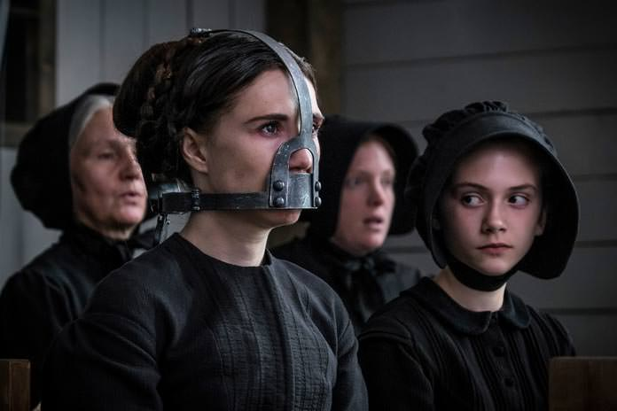
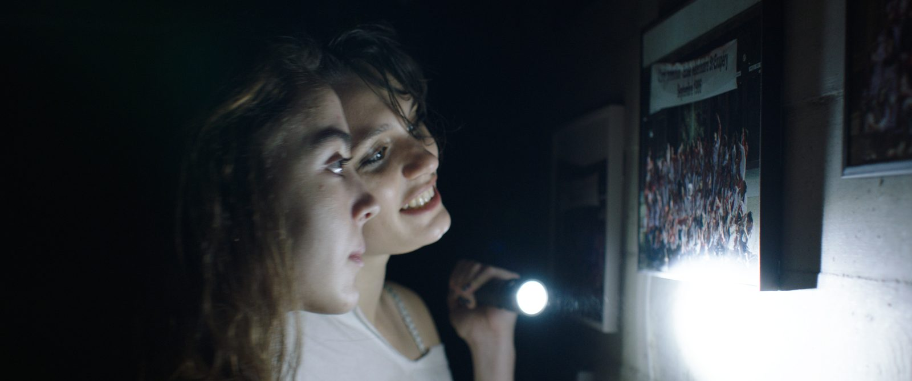
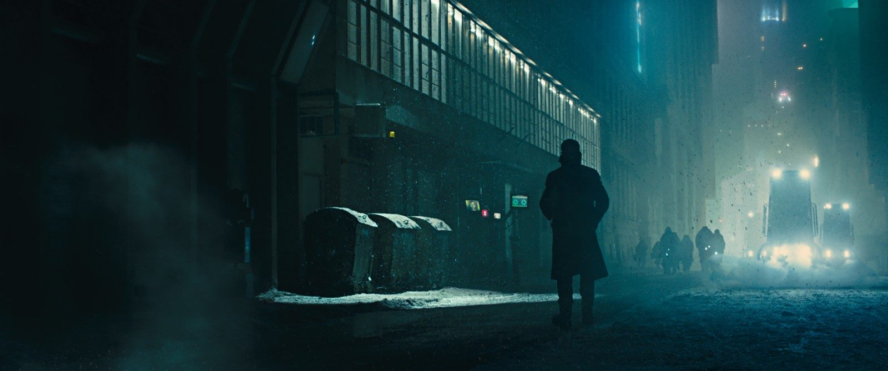
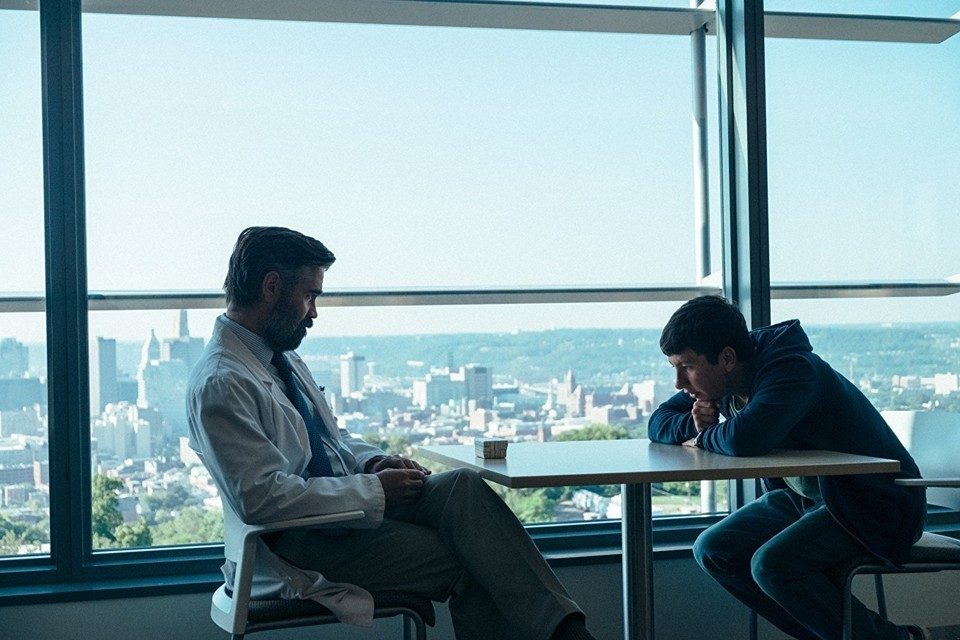

Le top des films 2017
Petite année cinéma 2017 malheureusement, mais quelques pépites néanmoins. Je n'ai cependant pas encore vu 3 films dont j'ai entendu le plus grand bien: Au revoir là-haut de Dupontel, The Square et sa palme de Cannes, et surtout le Beautiful Day / You were never really here de Lynne Ramsay.
Pour rappel: Top 2016, Top 2015, Top 2014, Top 2013, Top 2012, Top 2011, Top 2010, Top 2009, Top en 2008, Top en 2007 , Top en 2004-2005-2006
Les "pas encore vus"
Moonlight, 20th Century Women, The edge of seventeen, Les fantômes d'Ismaël, Their finest, Prevenge, You were bever really here, Coco,
Le top 2017

1/ Dunkirk, bande-annonce


4/ Nocturnal Animals, bande-annonce

5/ The Lost City of Z, bande-annonce
6/ Le Sens de la fête, bande-annonce

8/ Grave, bande-annonce

9/ Blade Runner 2049, bande-annonce
10/ Hounds of love, bande-annonce

11/ Manchester by the sea, bande-annonce

12/ Get Out, bande-annonce

13/ The Killing of a Sacred Deer, bande-annonce
14/ Good time, bande-annonce

15/ American Honey, bande-annonce
Mentions honorables
The girl with all the gifts, bande-annonce
The Meyerowitz Stories, bande-annonce
La fille de Brest, bande-annonce
War for the Planet of the Apes, bande-annonce
It comes at night, bande-annonce
The Defiant Ones, bande-annonce
Commentaires 1
Le top des films 2018 | The R Blog, 2019-01-17 17:59
[…] rappel: Top 2017, Top 2016, Top 2015, Top 2014, Top 2013, Top 2012, Top 2011, Top 2010, Top […]